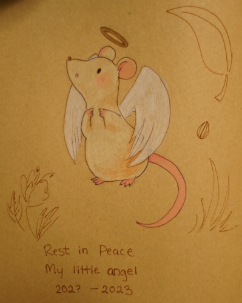
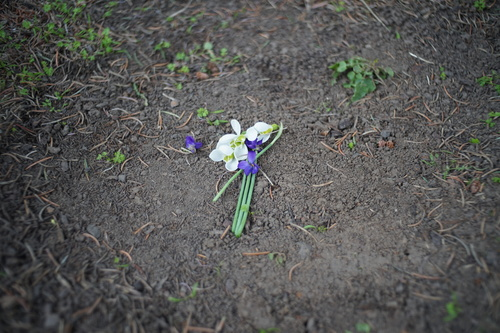

About a week ago, a gray sweatshirt appeared on top of a retaining wall a block away from my house. People lose their clothes all the time here, so I didn't think too much of it.
Yesterday the sweatshirt was gone... and a squished and dead mouse was there instead ;__________; I saw his white fur and thought that there's no way this little guy isn't an angel. He was so beautiful even as a smooshed and damp mouse.
I told Ryan when he got home. He told me to draw a picture of the little angel so we could honor his memory!
Ryan snuck out later and retrieved our small angel and buried him under a tree in our yard.
I found some snow drops and some early violets for his little grave. I hope he will bless us with his small ghostly presence!!
I'm secretly hoping that Ryan will recieve the Mouse Ghost curse and turn into a mouse when he is stressed like black Hanekawa. I would be very careful not to squish him.